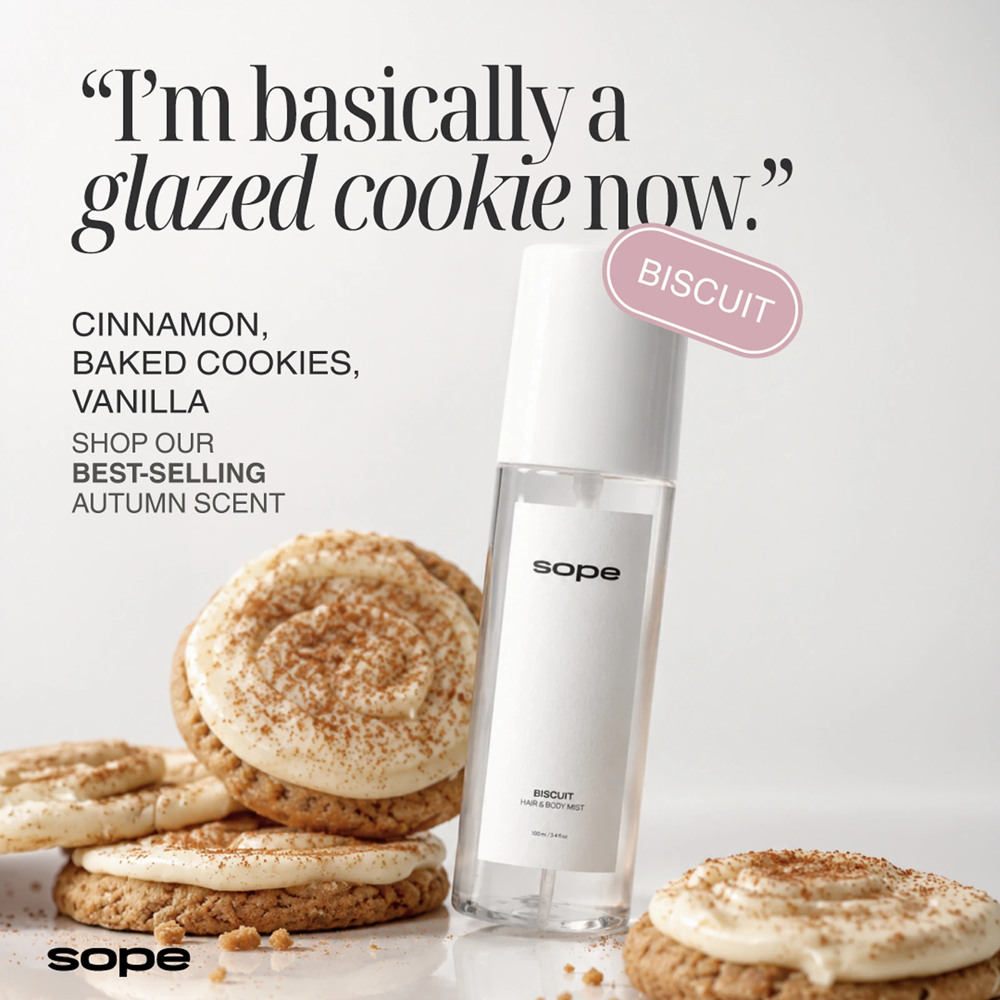
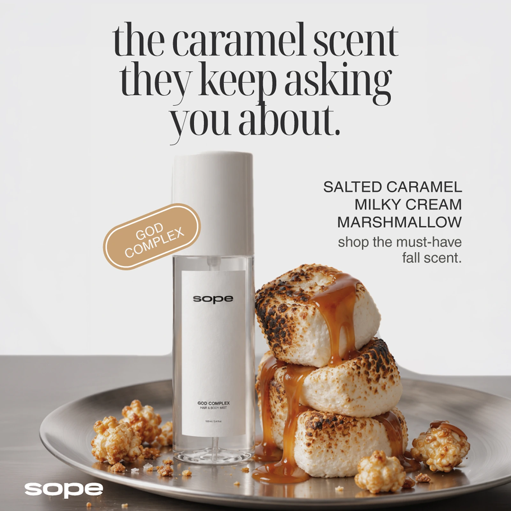
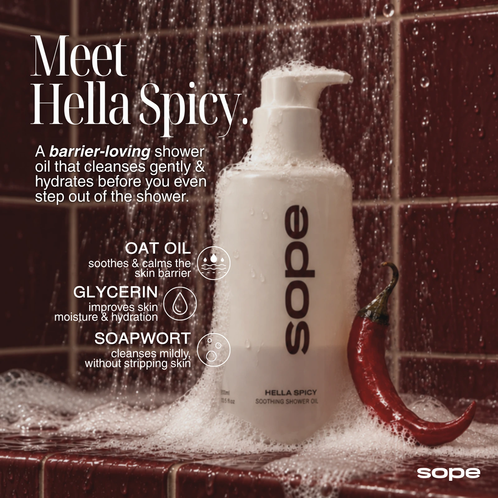
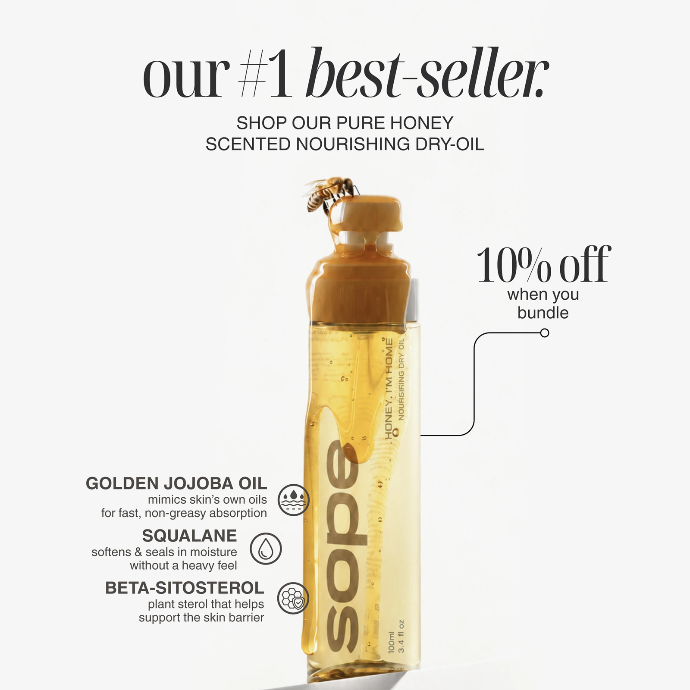
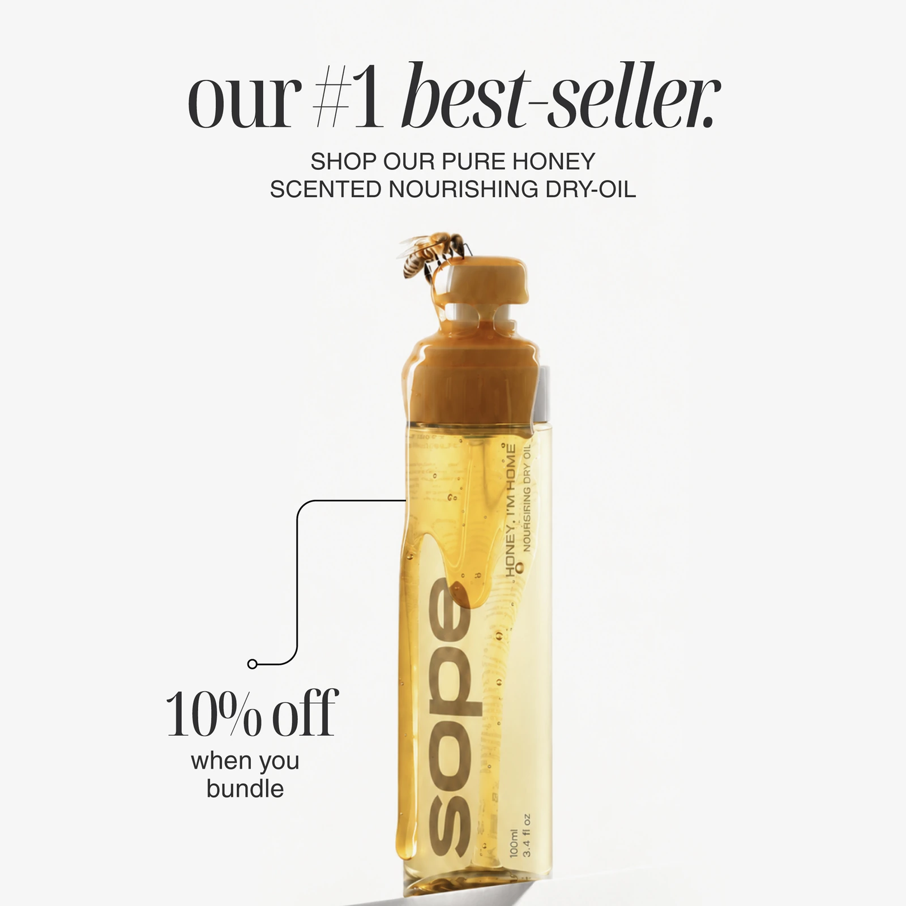
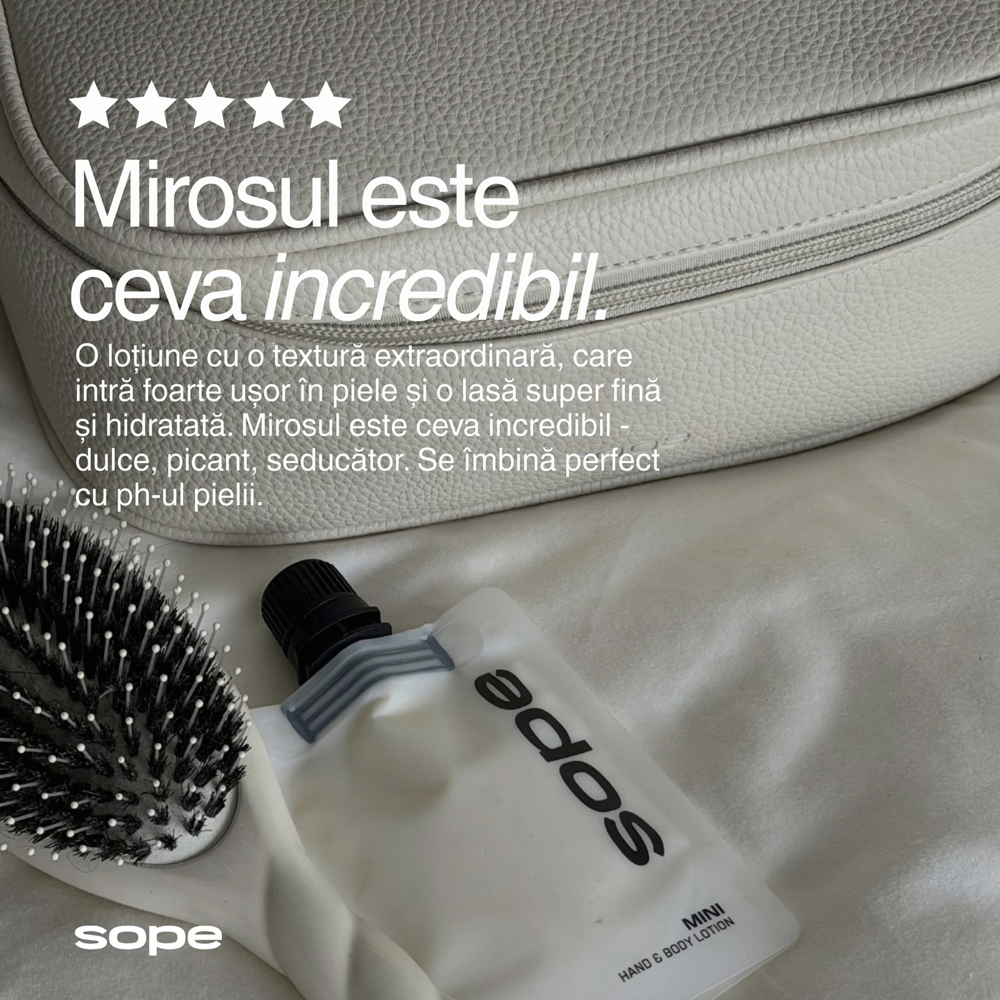
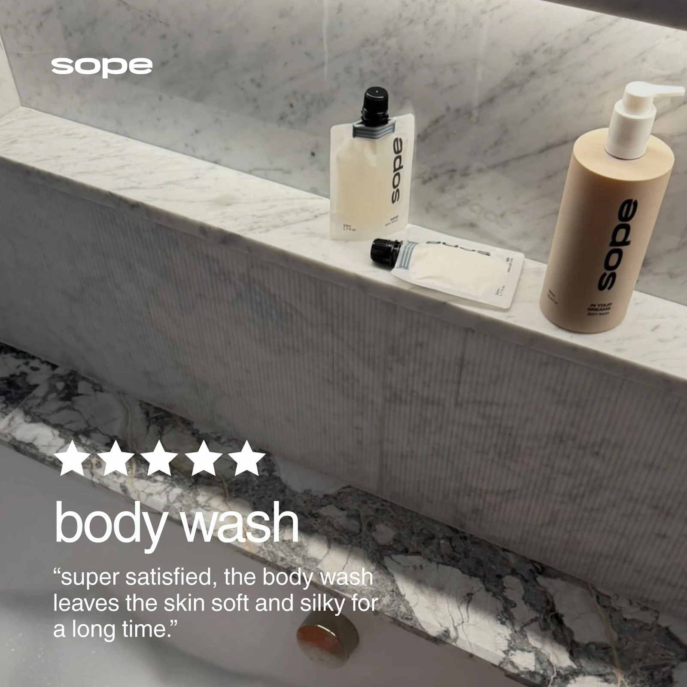
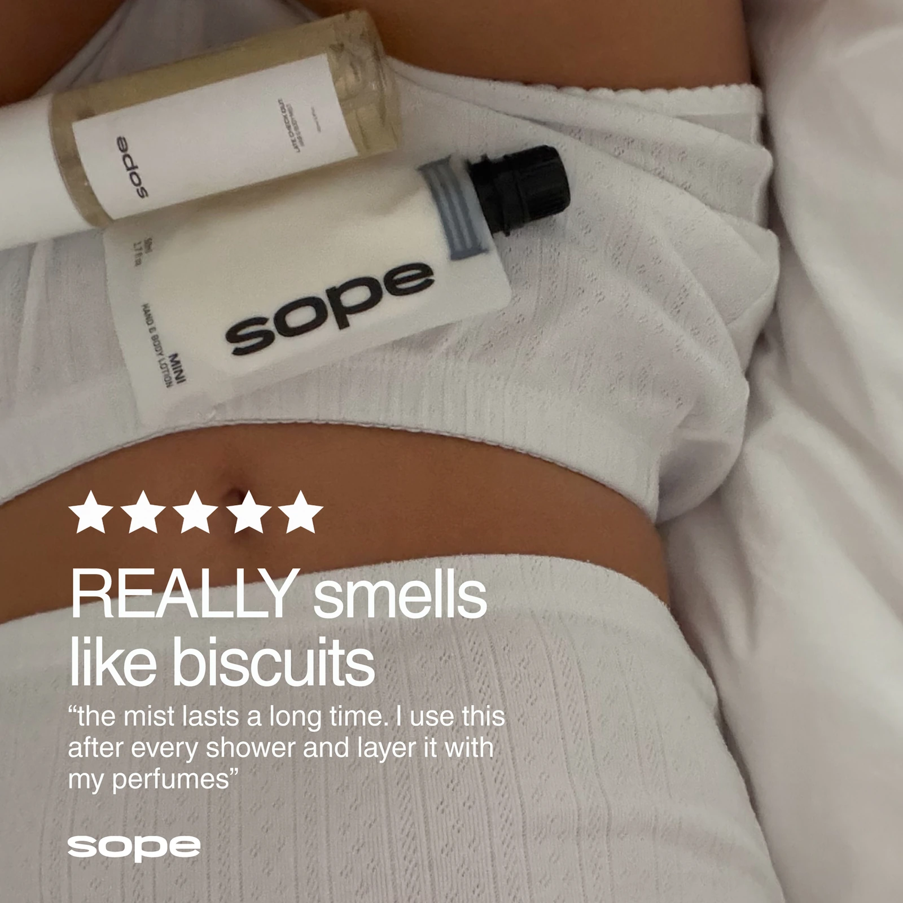
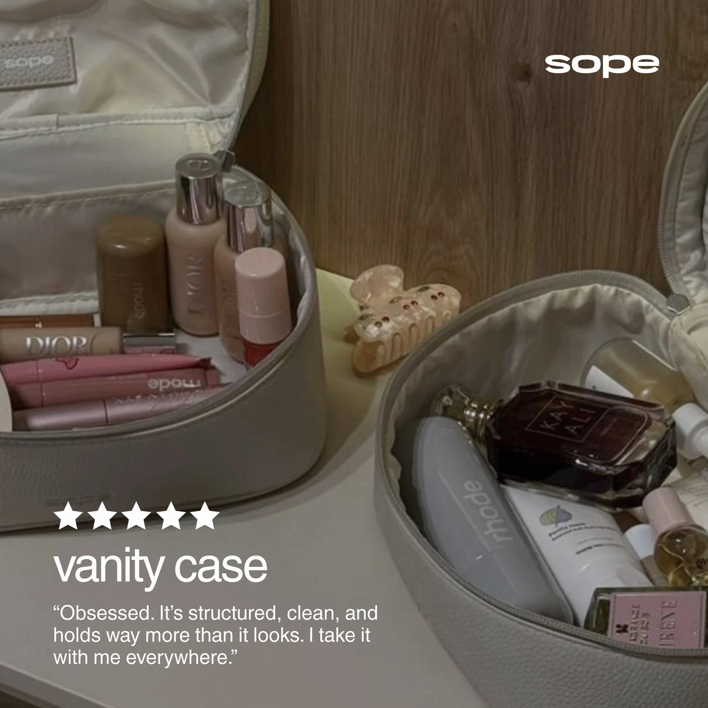
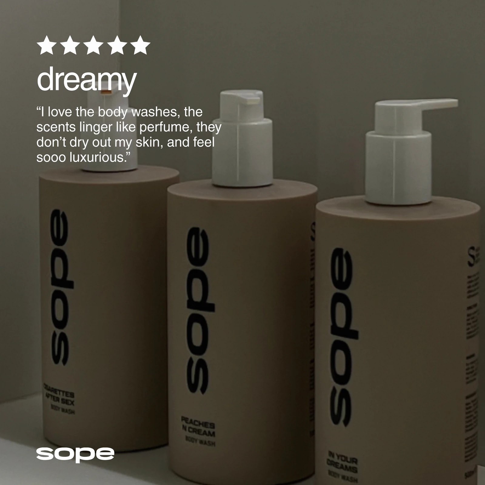

Make the feeling immediate.
Editorial headlines and sensory imagery create a distinctive first impression before product detail enters.
Turning body care into a conversation worth opening.
Paid social advertising, product storytelling, review creative and long-form campaign newsletters.
SOPE needed to turn sensory products into clear digital messages without flattening the brand into routine ecommerce. Every asset had to create desire quickly, then make the product, scent or offer easy to understand.
I developed a connected creative system across acquisition and retention: strong opening hooks for social, product-led stories for consideration, proof and offers for conversion, and newsletters that could carry the same voice through a longer narrative.
The campaign moves from attention and sensory language into product proof, best sellers and customer reviews. The visual voice stays recognisable while each stage answers a different buying question.
Editorial photography, oversized type and clear product close-ups introduce the brand and its core body-care range.
Dessert-led imagery translates abstract scent notes into familiar textures, flavours and moods that can be understood in a second.





Best-seller, bundle and offer creative reduce the decision while keeping the same editorial tone.



Review-led ads turn texture, scent and everyday use into direct proof while lifestyle imagery keeps the communication personal.






The system changes what it explains as the customer moves from first impression to product evaluation and purchase.
Editorial headlines and sensory imagery create a distinctive first impression before product detail enters.
Ingredients, textures and familiar references make an invisible product benefit easier to imagine.
Best-seller signals, offers and customer language provide a concrete reason to act.